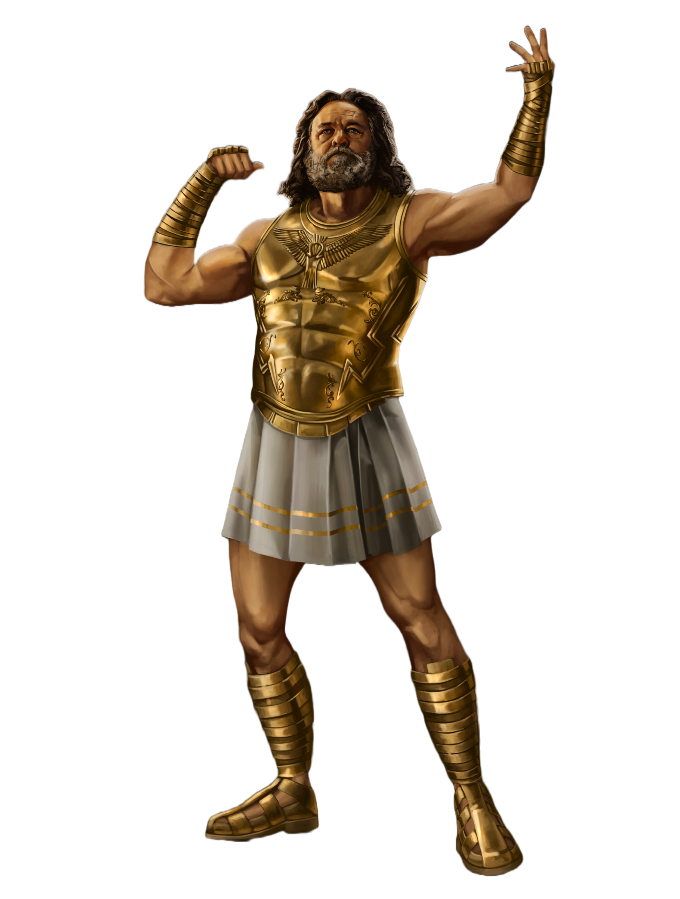
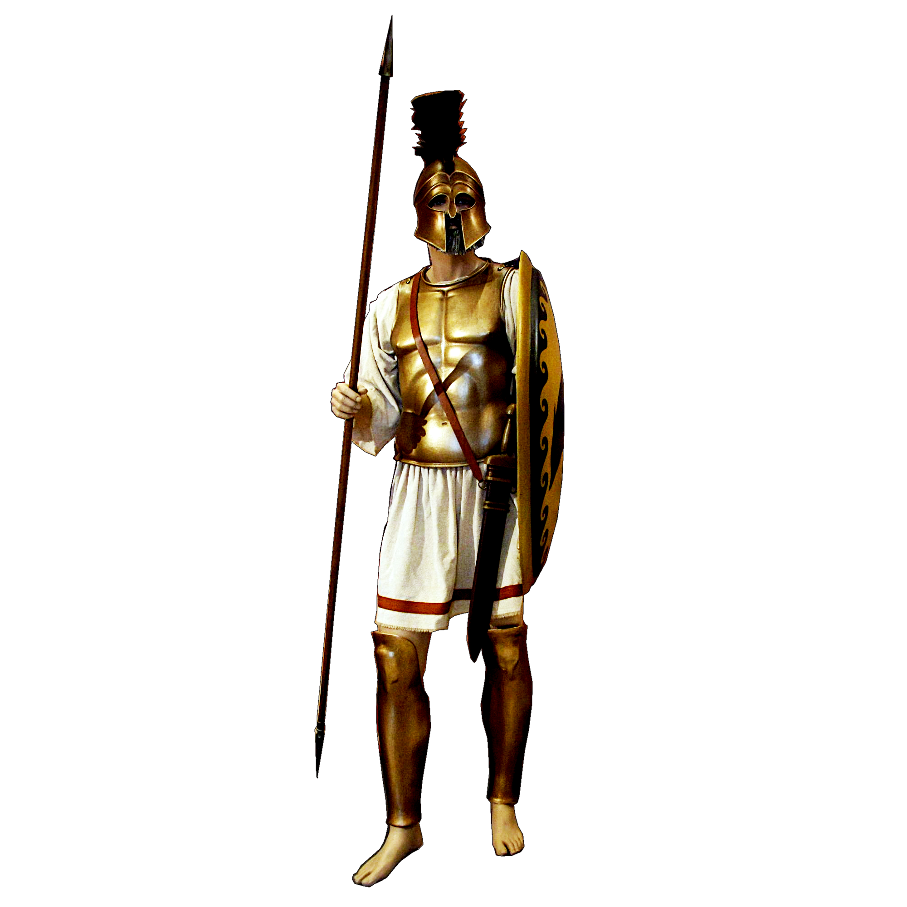

As Olimpíadas surgiram na Grécia Antiga, por volta de 776 a. C., na cidade de Olímpia. Os Jogos Olímpicos da Antiguidade estavam associados a rituais religiosos e prestavam homenagens a deuses gregos, como Zeus.
Com a intenção de promover a amizade e integração entre os povos através de competições esportivas saudáveis os gregos criaram os jogos de Olímpia. Licurgo (rei de Esparta), Ífitos (rei da Élida) e Clístenes (rei da Pissa) formalizaram o tratado no templo de Hera.
A primeira edição dos Jogos Olímpicos modernos foi realizada na cidade de Atenas, em 1896. Participaram 14 países e 241 atletas homens, pois as mulheres eram proibidas de competir. Atletismo, ciclismo, esgrima, ginástica, halterofilismo, luta, natação e tênis foram as modalidades participantes. Naquela época, os jogos duravam de cinco a seis meses.
As mulheres só foram autorizadas a competir nos Jogos Olímpicos em 1900.
As seis cores: amarelo, preto, verde, vermelho e fundo brancoforam escolhidos porque a bandeira de cada nação contém um deles, pelo menos.